Explore the uncertainty people face when learning technique, managing setbacks and returning to training.
LiftLab Case Study
A research-led mobile experience for powerlifting, recovery and progression.

Product demoVideo coming next
01 / Context
The project started with a problem I had experienced firsthand.
Powerlifting centres on three lifts—the squat, bench press and deadlift. Its appeal is clear: measurable progress, growing strength and goals to work towards. But learning to lift and navigating setbacks can make that progress difficult to sustain.
When I started powerlifting, I was still learning the fundamentals. Poor posture and technique led to a lower-back injury, interrupting my training. Returning meant stepping back, following structured recovery exercises and gradually rebuilding my routine.
During my MSc UX project, a teammate shared a similar experience. That led me to ask: how could one digital experience help people learn, navigate recovery and return to consistent training?
Investigate how guidance, training structure, progress and community could connect in one coherent experience.
Personas · Low-fi concepts · Wireframes · High-fidelity UI · Methodology · Analysis
The Process
02 / Research
Understanding the people behind the lifts.
To understand powerlifting beyond the sport itself, I explored the goals, behaviours and challenges shaping people’s training and recovery. I used surveys and interviews to look at what motivated people to train, what interrupted their progress, where they needed support, and which forms of guidance they found useful. These insights helped me decide where to investigate further.
To understand people’s training and recovery experiences, I conducted surveys and user interviews with my team. I focused the research on four main themes: goals, barriers, support and useful guidance.
Questions centred on:
- What are you working towards in powerlifting, and how do you plan your training and track progress?
- Can you describe a time when pain, injury or another challenge interrupted your training? How did you respond?
- When you’re unsure about technique or returning to training, where do you turn for support, and what remains unclear?
- Tell me about guidance you’ve used, such as videos, training plans or coaching. What made it useful or difficult to follow?
Findings
Increasing strength was the clearest goal among powerlifting respondents.
Joint pain was the most frequently selected challenge in the survey.
Improving technique and preventing injury were both recurring priorities for support.
Video tutorials and personalised training plans were the most preferred guidance formats.
Competitor analysis
What existing products did well—and where they fell short.
I compared adjacent products to understand how they approached coaching, recovery, tracking and motivation. I looked for ideas that could inform LiftLab and gaps they left in a powerlifting journey.

Nike Run Club
Guided running, motivation and progress tracking.
Pros
- Free guided plans: Made structured training easier to start.
- Audio coaching: Offered guidance without constant screen attention.
- Community challenges: Encouraged consistency.
- Wearable pairing and shoe mileage tagging: Connected activity with training history.
Cons
- Running-specific: Without strength-training or recovery workflows.
- Limited plan depth: Less support beyond beginner programmes.
- Reported sync and accuracy issues: Could undermine continuity and trust in progress data.
For LiftLabMake structured training approachable, with guidance that supports the task rather than competing for attention.
Annotated interface review
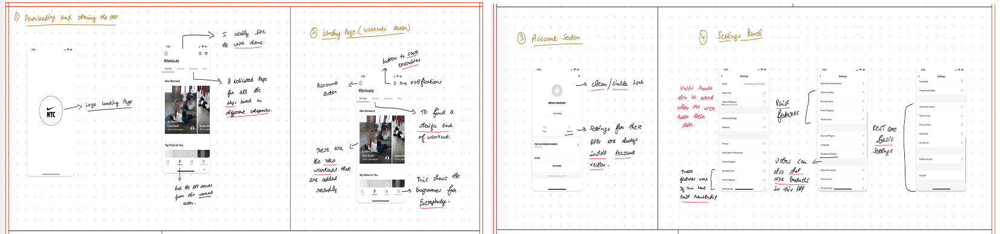
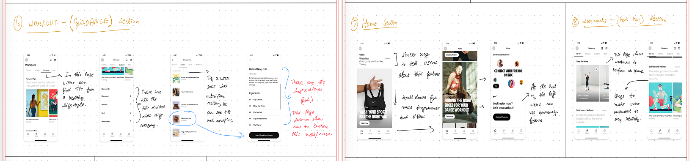

Prehab
Recovery, injury prevention and personalised rehabilitation.
Pros
- Recovery focus: Prioritised recovery and injury prevention.
- Guided content: A broad tutorial library and personalised plans.
- Progressive-load principles: Provided a structured path back to performance.
- Custom workout builder: Allowed flexible routines.
Cons
- Paid access: Created a barrier for cost-sensitive users.
- Limited progress tracking: Made improvement harder to see.
- Reported reliability concerns: Accuracy concerns, bugs and video-loading issues could interrupt recovery guidance.
For LiftLabConnect clear recovery guidance with visible progress and a coherent return-to-training experience.
Annotated interface review
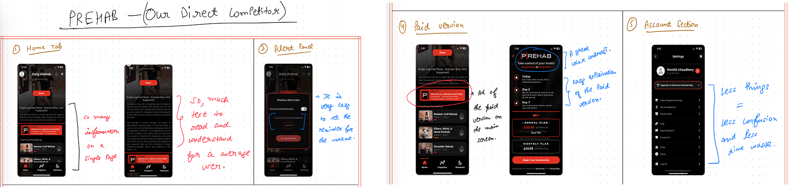
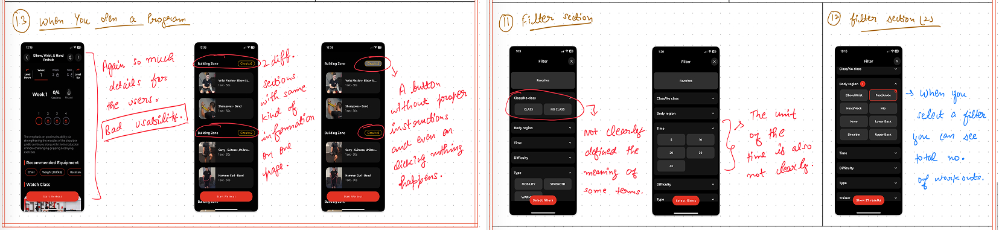

Strava
Activity analytics, live tracking and social fitness.
Pros
- Analytics and live tracking: Made performance visible.
- Device syncing: Reduced manual activity logging.
- Community and challenges: Turned progress into a shared experience.
- Fatigue and freshness tracking: Supported training-load planning.
Cons
- Not lifting-focused: Core activity metrics did not explain technique, sets or recovery.
- Access friction: Subscription barriers and desktop-only features added friction.
- Privacy and tracking concerns: Could reduce confidence in sharing and interpreting data.
For LiftLabMake lifting progression meaningful, while using community to support motivation—not replace training guidance.
Annotated interface review
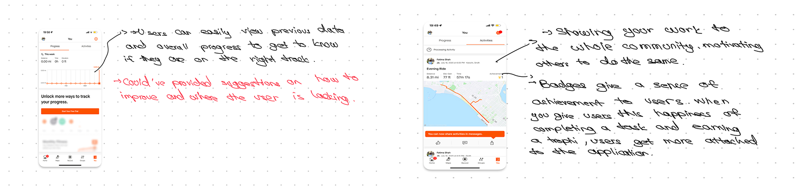
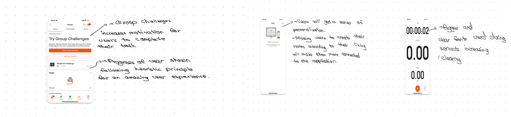
Emerging problem areas
Four problem areas emerged.
I brought the survey and interview findings together with observation, secondary research and the competitor review. Affinity mapping helped me group the recurring challenges:
Recovery uncertainty
Injury, joint pain and slow recovery made the next step unclear.
Technique guidance
Beginners wanted structured support without relying entirely on a trainer.
Consistency
Fatigue, disrupted routines and low motivation interrupted progress.
Fragmented support
Training, recovery, progress and community lived in separate places.
Defined problem
Powerlifters—especially beginners and those returning from injury—lacked a cohesive, powerlifting-specific experience connecting recovery guidance, technique, structured training and progress.
03 / Synthesis
One persona, shaped by the research.
I brought the recurring goals, behaviours and pain points from five research perspectives into one composite persona. Lisa helped me design for the shared patterns—not for a single participant.
Composite persona
Lisa
Lisa is 23 and moved from Spain to London for a master’s in design at King’s College London. Her friends back home inspired her to try powerlifting. She liked having a goal to work towards and seeing her strength improve, but a back injury interrupted her training. Now she is trying to make sense of recovery advice and find appropriate support. She hopes to return to exercise gradually when she is ready, without feeling as though she has to figure out every step alone.
Needs
Lisa needs recovery information she can understand, appropriate support for making a plan, and a clearer path back to exercise when she is ready. As she returns, she wants technique guidance and a way to see her progress.
Pain points
The injury has interrupted the progress that motivated her. Advice is scattered across different sources, so she struggles to tell what is relevant to her situation. She also worries about doing too much too soon, while regular one-to-one coaching may be difficult to afford.
Goals
- Understand her recovery options
- Return to exercise gradually
- Rebuild strength and confidence
- See progress over time
Behaviours
- Searches for recovery advice
- Compares guidance from different sources
- Prefers a structured plan
- Tracks her training progress
Lisa combines recurring research patterns; she does not represent one person's exact experience.
Illustrative user journey
The more Lisa searches, the harder it feels to begin again.
After her injury, Lisa wants to understand her recovery options and eventually return to lifting. She moves between video tutorials, recovery articles, community discussions and workout apps, looking for a plan that connects them. Instead, each source answers a different part of her question. This scenario shows how that fragmented search could wear down her confidence.
Motivated
Her friends inspire her to lift, and early progress keeps her engaged.
Video platforms
After the injury, she watches recovery and exercise videos but finds conflicting advice.
Articles & forums
She reads more perspectives, yet cannot tell what applies to her situation.
Workout apps
Plans help her track training, but do not connect clearly to her recovery questions.
Steps back
Sorting through it all feels exhausting, so she pauses her return to lifting.
Lisa has not lost interest in lifting. She has lost confidence in piecing together a route back from disconnected sources.
04 / Ideation
Turning Lisa’s fragmented search into a connected product.
Lisa moved between videos, articles, community discussions and workout apps, but each source addressed only one part of her situation. She did not need another isolated source of advice; she needed a more coherent way to connect recovery information, training guidance, visible progress and support.
How might LiftLab connect the guidance Lisa was already searching for, without making her piece the journey together alone?
Understand recovery→Plan training→See progress→Find support
Card sorting
I grouped the opportunity into four feature areas.
I used card sorting to organise the ideas around Lisa’s needs and the wider research patterns. Recovery, training, progress and community gave the concept a clearer shape before I decided which features to take forward.
- Recovery plans
- Rehabilitation exercises
- Training plans
- Technique guidance
- PR tracking
- Reminders and rewards
- Groups
- Shared progress
Pain point to feature mapping
Research and card sorting shaped a focused feature set for Lisa.
I brought Lisa’s needs together with the wider research patterns, then used the card-sorting groups to decide which ideas to take forward. The resulting features support recovery, safer training, visible progress and motivation. The mapping below shows the pain point each feature was designed to address.

Ideation
Information Architecture
I organised LiftLab into six main areas—Onboarding, Home, Recovery, Workout, Community and Menu/Profile—to show where each screen, function and piece of information would live.


Ideation
User Flows
I mapped the paths users could take through LiftLab, including the decisions and alternative routes they might encounter while starting recovery, planning a workout or joining the community.


Ideation
From Sketches to Low-Fidelity Wireframes
Following the information architecture and user flows, the first screens were explored through sketches and then translated into low-fidelity wireframes. The images below show a selected set from each stage rather than every screen produced.
01 / Sketches
Exploring the structure on paper.
Quick sketches helped compare layouts, navigation patterns and the sequence of key tasks before the screens became more defined.


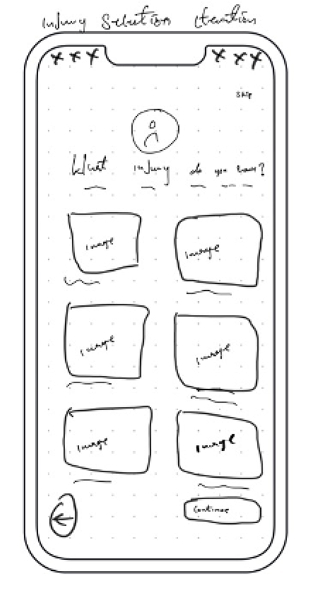

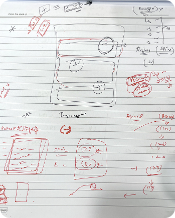
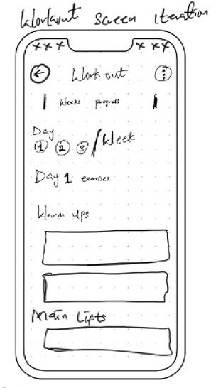

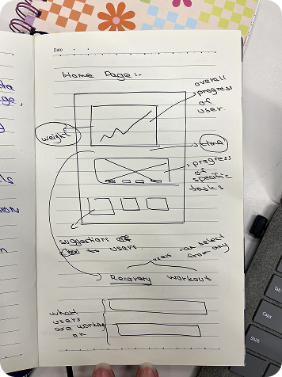

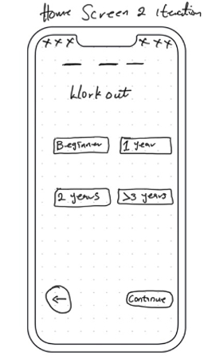
02 / Early iterations
Three sketching rounds shaped the direction.
Before moving into low fidelity, I revisited the sketches three times—exploring the structure, comparing alternatives and consolidating the strongest direction.
01
Make experience choices visible
The scrollable experience selector hid a small set of choices. The next version displayed all four options together and described experience through time, making the choice easier to compare.


02
Simplify workout-day selection
The first concept used an Apple Watch-inspired arrangement of days. It was replaced with three clear dropdown fields, making the selected schedule easier to read and change.
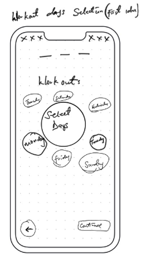

03
Bring the workout into one view
Warm-ups and other workout elements initially sat on separate screens. The revised overview brought warm-ups and main lifts together to reduce unnecessary navigation and improve readability.
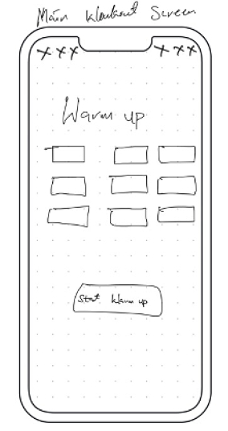

03 / Low fidelity
Turning the sketches into testable screens.
The selected low-fidelity wireframes show how the strongest ideas were translated into clearer screen hierarchy, navigation and task sequences.


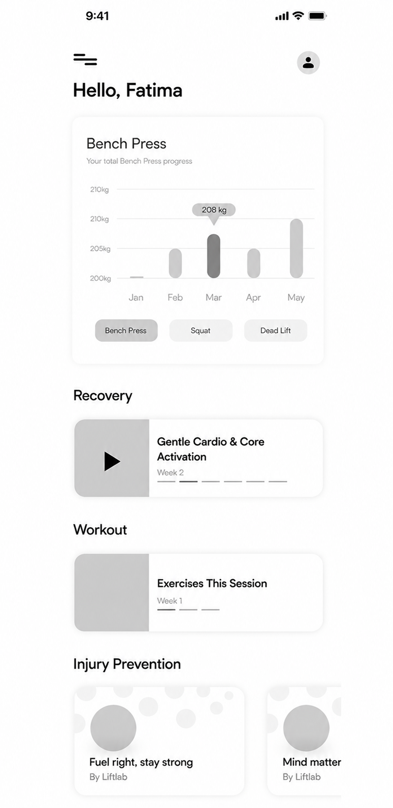
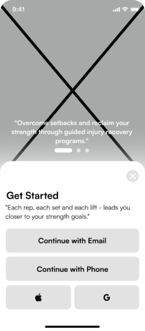
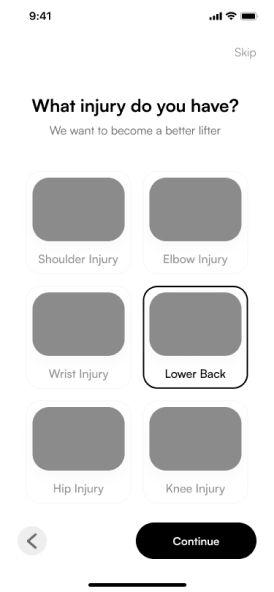
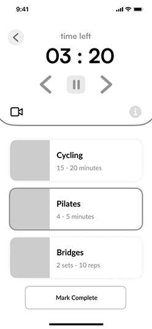
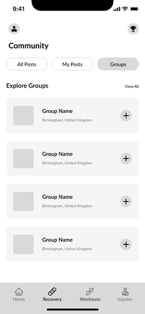
05 / Design development
From structure to a polished interface.
I developed the interface from documented low-fidelity work into the verified high-fidelity prototype, using clarity, hierarchy, support and accessibility to guide refinement.
Show only what users need for the immediate task.
Make progress and multi-step states visible.
Repeat familiar labels, icons and patterns.
Reveal guidance without cluttering the main task.
Feedback-led iteration
Users said the community feed felt too similar to Instagram.
I returned to an earlier direction and refined the layout. I also addressed readability, overlap, excessive clicks and complexity.
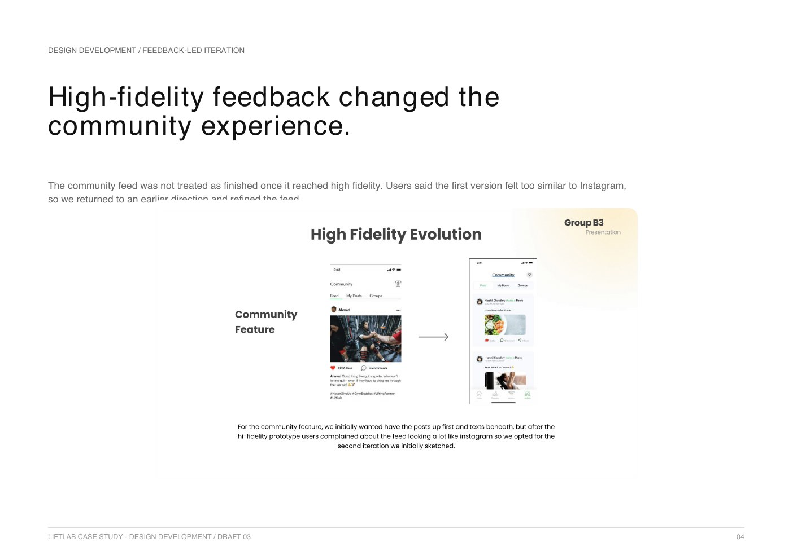
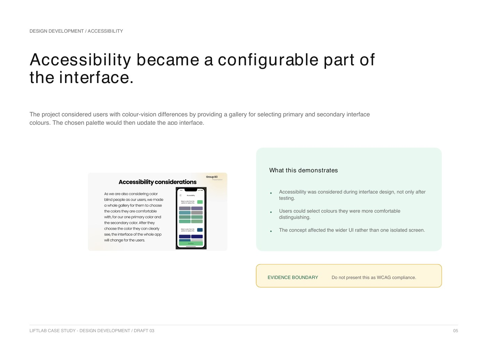
Accessibility
Colour preferences became configurable.
Users could choose primary and secondary interface colours they were more comfortable distinguishing. The selection affected the wider interface rather than a single screen.
06 / Evaluation
A useful prototype signal—not proof of real-world effectiveness.
I evaluated the prototype through responses from seven participants, who completed the 10-question System Usability Scale after interacting with three core flows.
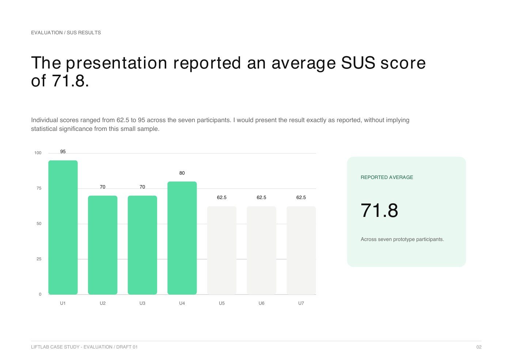
Prototype usability was tested. Feedback informed at least one traceable redesign. Iteration focused on clarity and reduced complexity.
No formal A/B test, statistical significance, clinical validation, real-world health outcomes or compliance claim.
I could not claim the product was effective in the real world. I could show that the concept was testable, understandable and ready for a more rigorous next round.
Next steps
Next steps
Content to be added.
End of case study
LiftLab
Research, structure and feedback brought recovery, training and progression into one coherent experience.